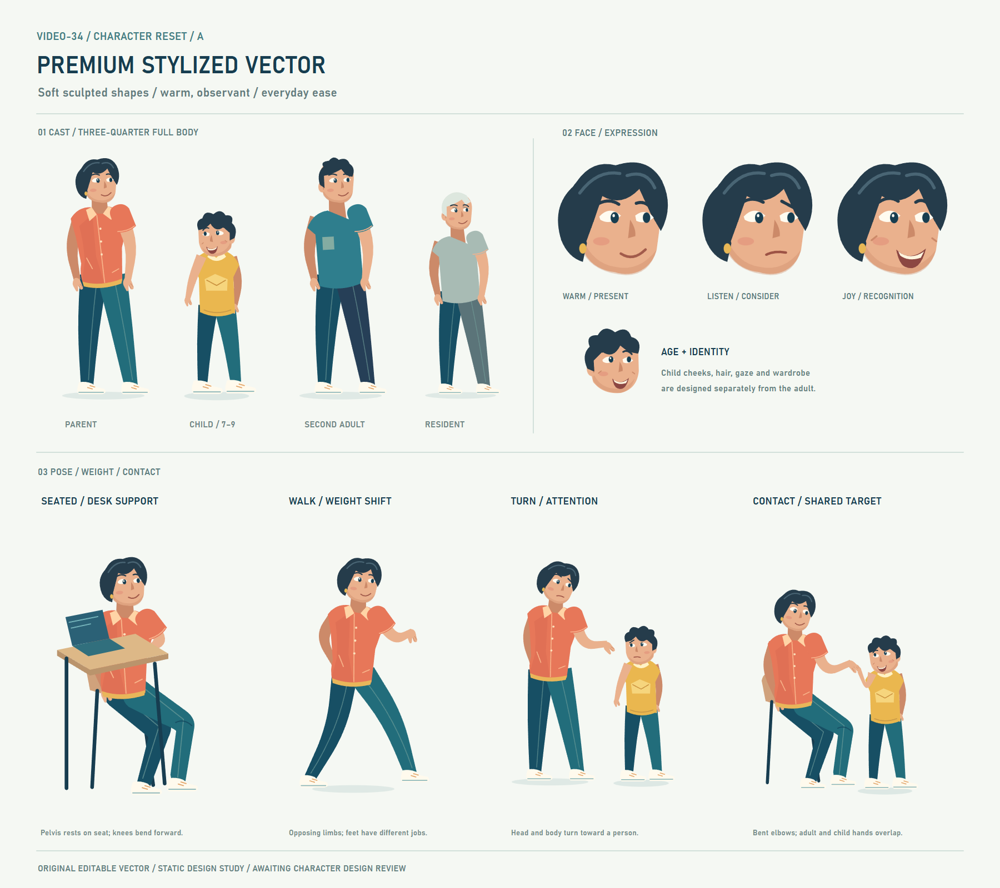
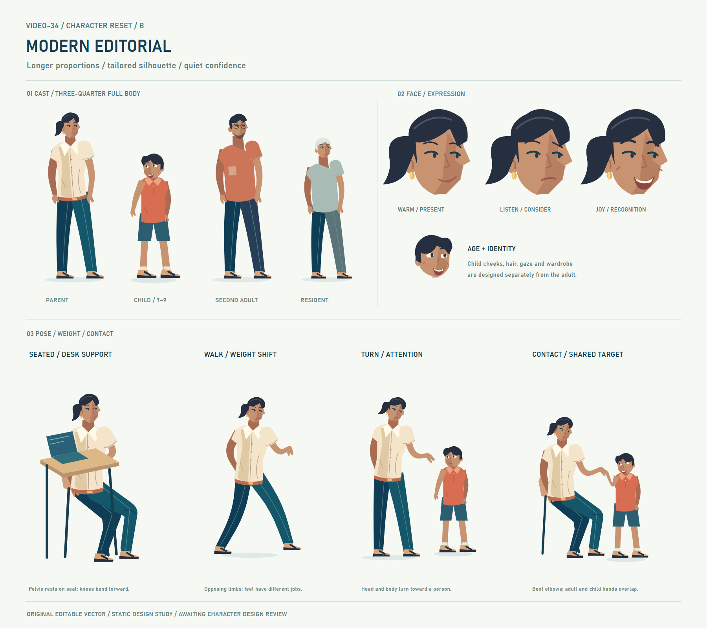
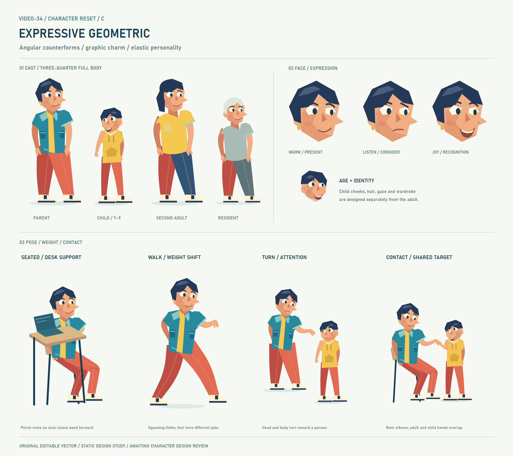
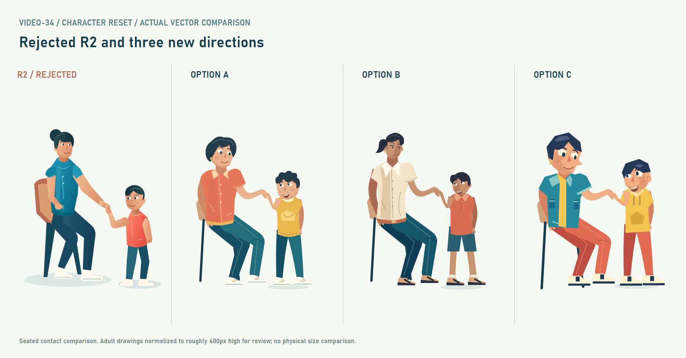
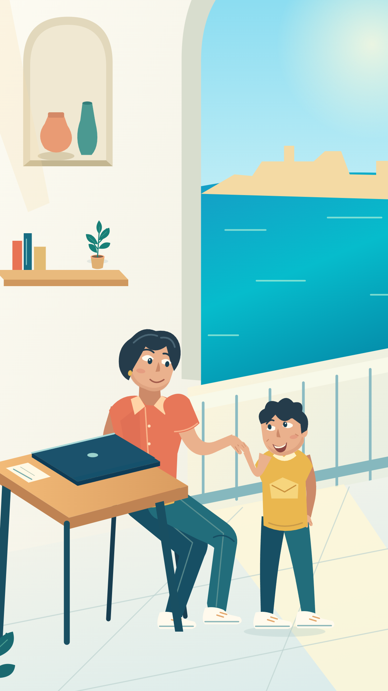

A · Premium stylized vector
Soft contours, warm expression, bob haircut, coral collared shirt. Chosen provisionally for the context test.
R2 character design: REJECTED — NOT APPROVED.
These are original editable vector character studies. Status: AWAITING CHARACTER DESIGN REVIEW. No animation or pilot MP4 produced.

Soft contours, warm expression, bob haircut, coral collared shirt. Chosen provisionally for the context test.

Smaller adult head, longer tailored silhouette, restrained eyes, ponytail and cream blouse.

Angular face planes, graphic hair, overshirt and broad cropped trousers. Stronger proportions and expression.

Seated adult drawings normalized to approximately 400px high. This is a review presentation, not a physical size comparison.

Environment, desk, closed laptop and camera retained from the actual R2 source. Old characters/chair replaced only in this isolated review copy; typography hidden to focus on anatomy.
Elbows bend before the wrist reaches the shared contact. Adult/child hands are separate paths. This demonstrates light finger/palm contact in a static pose, not a validated animated hand hold.
Choose a direction, or identify the face, silhouette, clothing or pose that needs another art pass. No character/pilot approval is inferred.
Diagnosis, construction decisions, checks and remaining limits